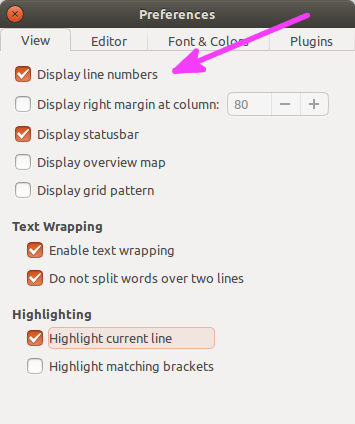
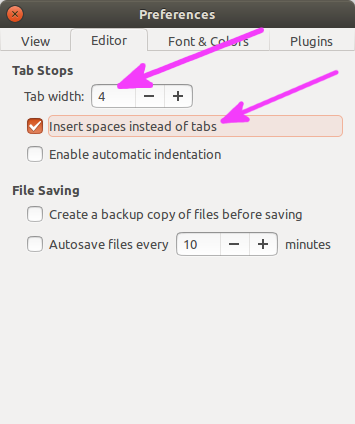

1.2. Setup and Python environments¶
The notes described here refer to Python 3.*, instead of the older Python 2.7. However, whenever possible we use notation that is consistent with both, and will comment on some differences throughout. A full list of differences between the versions are noted in the “What’s New” documentation HERE.
We will use Python through three different interfaces or forms (todo: insert images below):
- in the
ipythoninteractive environment, where Python operations can be run directly, variables can be defined and remembered for the the duration of a session, and files can be run; - with scripts in text files that we write, save and run (=execute). This makes it easy to save algorithms and programs for later usage and work, distribute or turn in for assignments, etc.;
- and in the Jupyter Notebook, which combines the interactive
functionality of
ipythonwith the storage of scripts; the notebook opens in the local browser (such as Firefox, for example) and also contains output images embedded in the page.
Sometimes, these interfaces will be used together, especially scripts
with ipython; having an interactive environment for running commands
is very useful for checking out the code as one constructs it, as well
as for investigating possible errors. ipython on its own is
convenient for quick tests and calculations, while scripts and the
Jupyter notebook are useful for storing larger, more complicated
algorithms and programs.
1.2.1. Text editor: gedit¶
For this course, we will use the gedit text editor, which is quite
basic but does at least have the nice feature of recognizing and
highlighting primary Python keywords, making code easier to type and
follow.
To use the gedit editor, you can use the shell terminal commands
to navigate to the directory in which you have a preexisting file, or
in which you want to create a new file. Then type the following in
the shell:
gedit THE_FILE_NAME.py &
In this case, if “THE_FILE_NAME.py” exists in that directory,
gedit will open it; otherwise, it will create an empty file of
that name for you to start editing. Using the ampersand & symbol
will allow for other commands to be run in the terminal while the
editor is open (in technical terms, using & symbol makes the
gedit command run in the “background”, allowing other commands to
still be executed in the “foreground”).
It is important to make your file names meaningful, either for your own use and remembering, or for that of submitting it for a class, etc. Also, make sure that your file name ends in “.py”, so that the text editor will recognize it as a Python-program file and make colors for Python keywords appropriately.
Additionally, make sure you go into gedit’s Preferences and set
the following properties:
show line numbers (helps with organizing, pinpointing runtime errors that Python points out, and interacting with others);
replace tabs with spaces (makes code more portable, as different text editors or computers can have different tab settings);
and set the number of spaces in a tabulation to be something reasonable such as 4 (having more makes the code hard to read easily, esp. as programs get more complicated; having fewer makes it hard to differentiate commonly used features like nested loops and conditions).
gedit-> Preferences 
{kind=link}
{kind=link}
1.2.2. Interface: ipython¶
To use ipython, it is probably best to navigate to your working
directory of files in the Linux shell terminal. This makes it easier
to save some work later in an organized fashion, and it is also easier
to execute the Python scripts. Then type the following in the shell
terminal:
ipython
and you should be in the interactive environment in the terminal itself. Voila.
note to self: insert image here
To exit the ipython environment, enter exit as a command in
the prompt. You can also hit two keys CTRL + d, and then verify
that you want to exit.
NTS: mention nice features such as TAB autocomplete and using “up” arrow key to show previous commands on prompt line to rerun/fix
1.2.3. Interface: Jupyter Notebook¶
To use the Jupyter Notebook, again it is probably best to navigate to your working directory of files in the Linux shell terminal, for easier opening and saving of work. Then, type into your terminal:
jupyter-notebook
and your browser should open up with a Jupyter page. You can select a
pre-existing file to open and work on, or go to the upper-right corner
and select New and a notebook for your version of Python from the
menu. This should open a new page with an empty notebook.
The notebook contains prompts that are similar to the ipython ones
in the browser page. However, each prompt can be more of a cluster of
commands that are entered line-by-line and then run as a modular
section, called a “cell”. To continue placing commands within a cell,
you can hit ENTER at the end of each command line; this just moves
the cursor to the next line in the cell. In order to evaluate all
commands in a cell, type SHIFT+ENTER when the cursor is inside it.
To evaluate all the cells in a notebook in order (top -> down), there is a “Run” key at the top of the page, below the menu list. This is useful, for example if you make a change in one cell that might affect the contents of others, so that they can all be reevaluated.
NTS: TAB autocomplete also exists
NTS: middle mouse button paste does NOT work: have to use CTRL+c and CTRL+v :(
The notebook can be given a name at the top of the page (default is “Untitled”), and saved and used again later. To directly open an existing jupyter-notebook from the terminal, one can type:
jupyter-notebook THE_FILE_NAME.ipynb
Note the standard extension for notebooks: “ipynb”.
To exit the Jupyter Notebook environment, in the terminal one can
enter CTRL + c; when asked to verify shutting down the notebook
server, type y and hit ENTER.